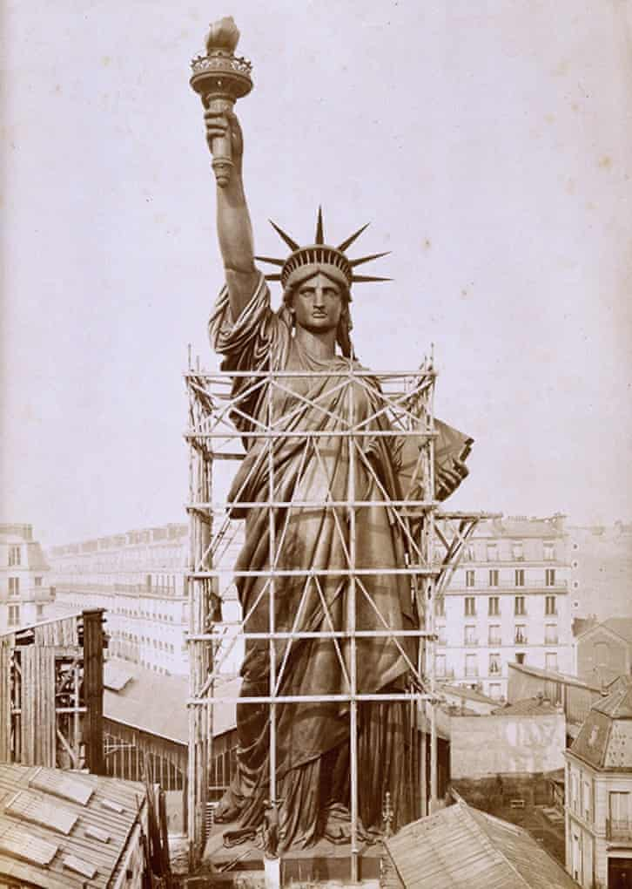

Fact about Statue of Liberty
A REAL PERSON WAS USED TO CREATE THE STATUE.
Frederic Bartholdi has surpassed any Mother's Day present you could think of: he modeled the world's most famous statue after his mother, Charlotte.
NWHEN THE STATUE FIRST ARRIVED FROM FRANCE, SHE WAS THE COLOR OF A SHINY NEW PENNY.
It took roughly 20 years for Liberty to patina to the greenish-blue hue she is today.

Go Back